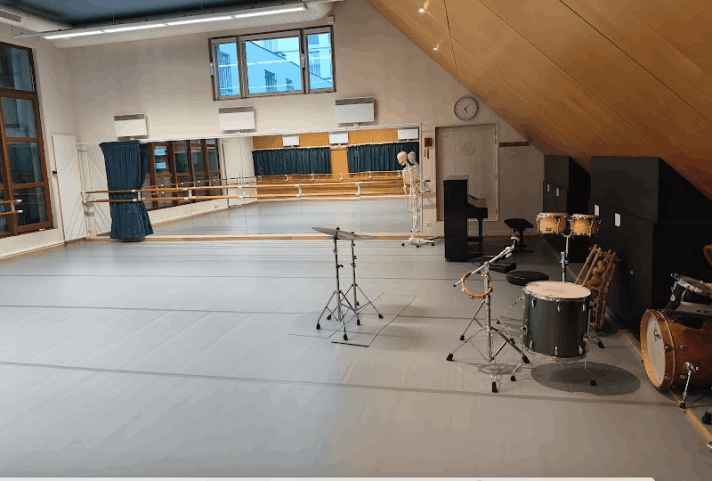
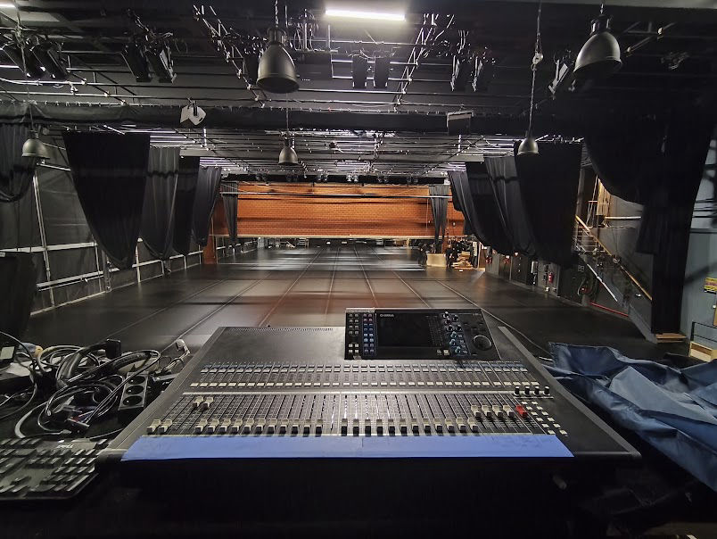
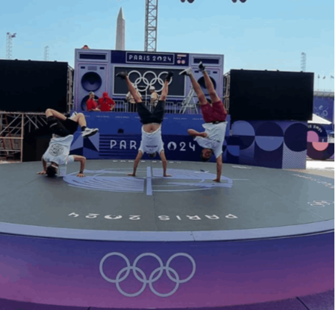
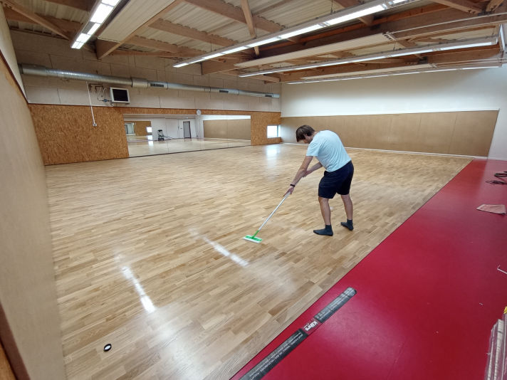
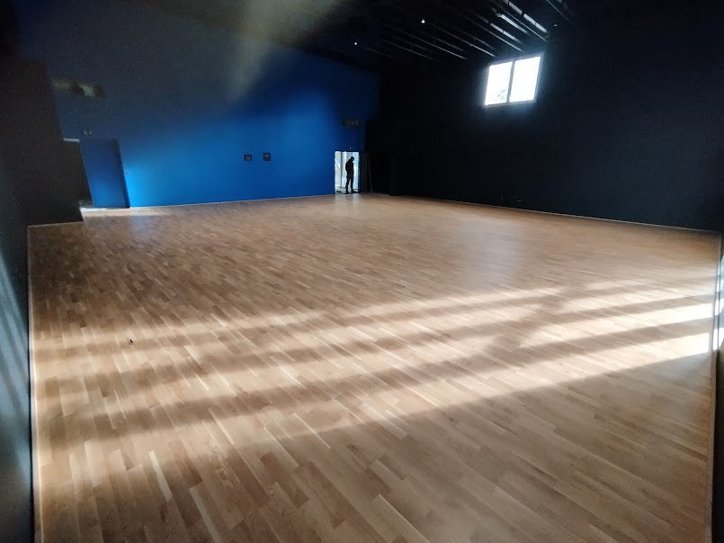
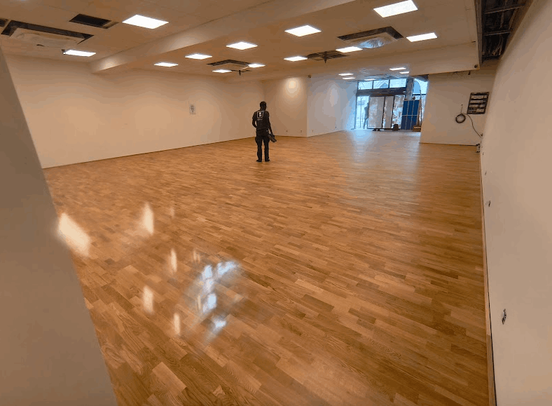

Planchers techniques SPECTAT pour l'enseignement et la scène. Des conservatoires de Paris aux Jeux Olympiques 2024 — la référence des professionnels de la danse.






Devis gratuit, réponse sous 24h
Me contacter